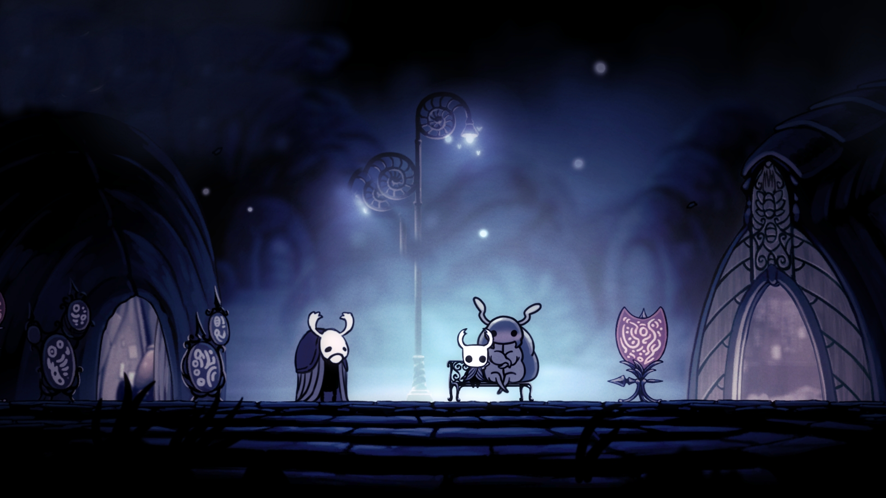
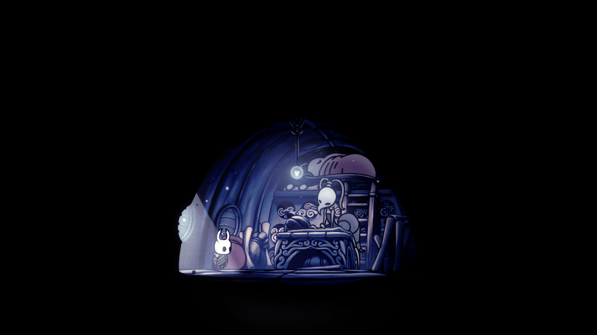
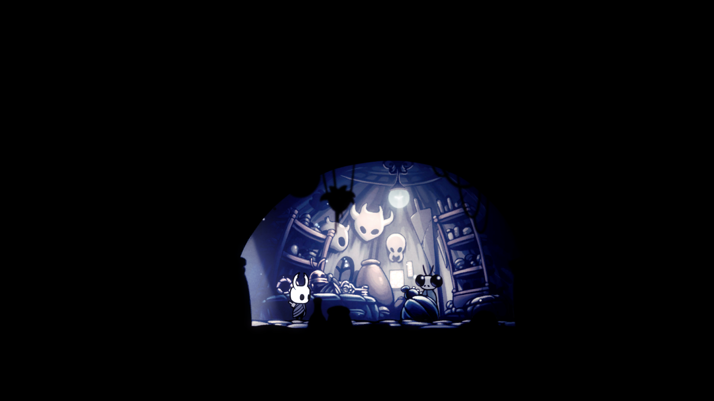
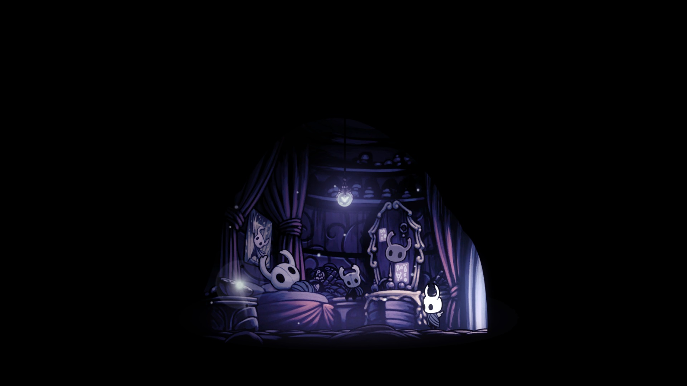

Actividades
En el centro de Boca sucia podemos escuchar las historias del anciano y ademas visitar diferentes tiendas
la tienda de mapas de cornifer donde comprar diferentes mapas de la zona
Tambien se pueden comprar diferentes productos de la tienda de sly aunque sus precios son duros
Visitar la casa de bretta donde se encuentra una sorpresa para los que han salvado al poderoso Zote
